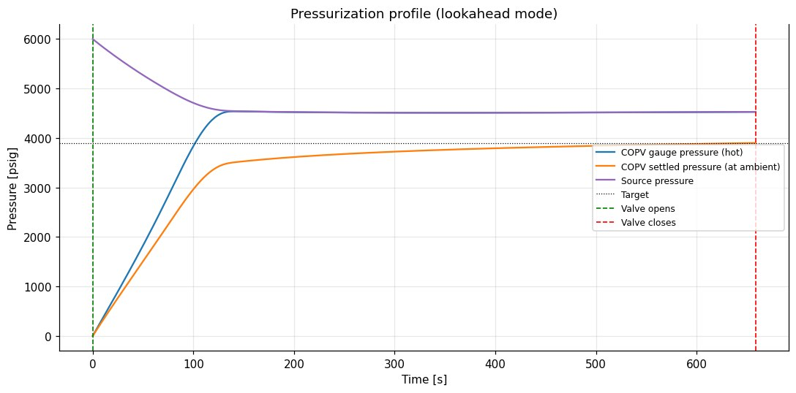
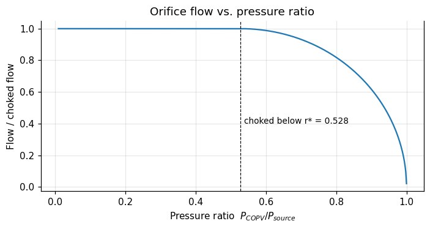
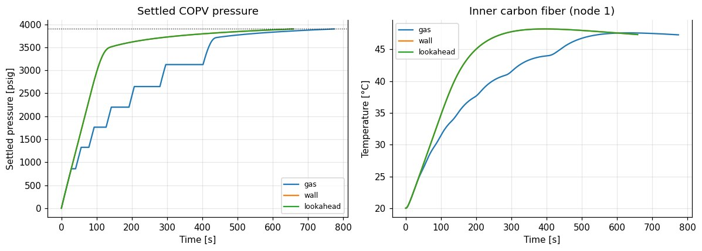

The problem
Filling a COPV fast heats the gas inside it, and the carbon-fiber overwrap has a temperature limit. Our COPVs have no temperature instrumentation, so the valve schedule has to rely on a model. I built one that predicts the pressure and temperature history of the source bottles, the COPV gas, the aluminum liner and a multilayer overwrap (carbon fiber, insulation, fiberglass), then decides when to open and close the fill solenoid.
How the model works
- Real-gas mass and energy balances for the source and the COPV using CoolProp (Helmholtz equation of state).
- Compressible flow through a solenoid and a flow-limiting orifice in series, handling both choked and unchoked conditions.
- Transient conduction through the wall: a lumped liner plus a multi-node discretization of each overwrap layer.
- Event-driven valve control with three temperature-limit strategies, integrated with event detection (Brent's method to pin down the exact closing time).
Three control strategies
Gas mode closes the valve when the gas hits the limit. It's the most conservative, since the gas is always the hottest component. Wall mode closes when the predicted peak liner temperature hits its limit, using an energy-balance upper bound that doesn't depend on the uncertain heat transfer coefficient. Lookahead mode keeps simulating "what if I close now?" with the full model and closes right before the inner carbon-fiber node would exceed its limit.
Results




What I learned from it
- Limiting the predicted wall temperature instead of the gas temperature shortens the fill, because early on the cold wall can soak up the heat of a small gas mass.
- Most of the fill time is the slow tail after the pressures equalize, which is limited by heat transfer and not by the valve.
- Cascading the source (keeping one full bottle for the top-off) is the most effective way to shorten that tail.